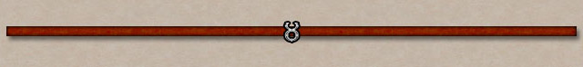

Patch Server News
Welcome to the Ultima Online Patch Server. Announcements, maintenance notices, and patch information will appear here.
Welcome, traveler
Patch Server News
This page is an example news page. Replace this text with current information for your players. You can add more news sections below using the same simple layout.

Latest updates
Patch information
List the latest changes here. Keep the patcher open until all files have been downloaded and applied.
Maintenance notices
Server announcements
Use this section to announce scheduled maintenance and let players know when the shard will be available again.